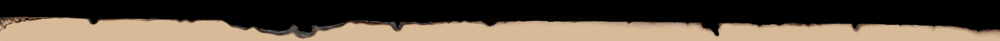

We build distinctive identities for businesses ready to show what they are made of.
Your business
has grown.
Has your brand?
Your business may have evolved,
your offer may have improved, and your ambitions
may be bigger than when you started.
But your brand can get left behind.
Kandeel helps close the gap between the quality
of your business and the way it is perceived.

We turn what makes your business valuable
into a brand people can see.
Strategy
We find the idea, position and character at the heart of your business.
Identity
We turn that thinking into a distinctive visual language.
Systems
We build identities designed to work consistently across every touchpoint.
hola mundo
hola mundo
hola mundo